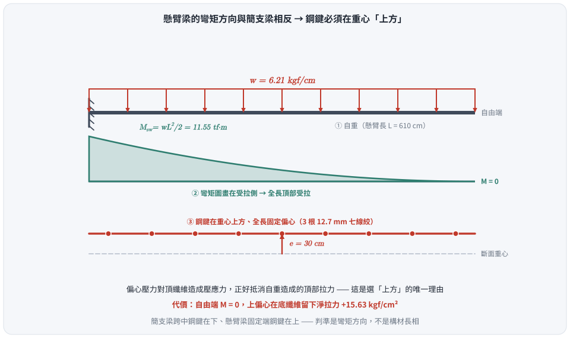
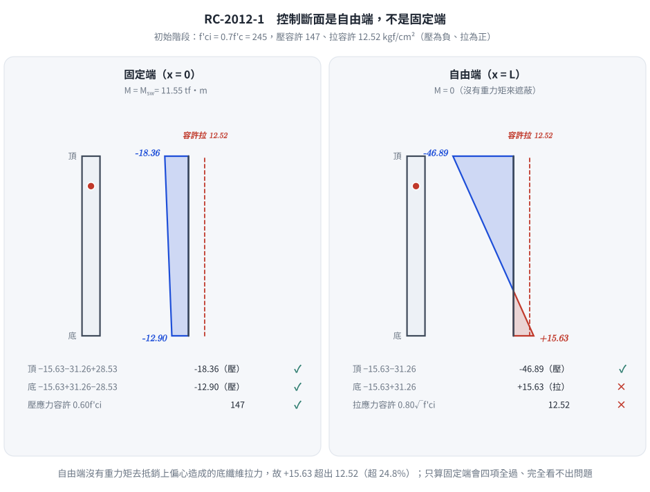
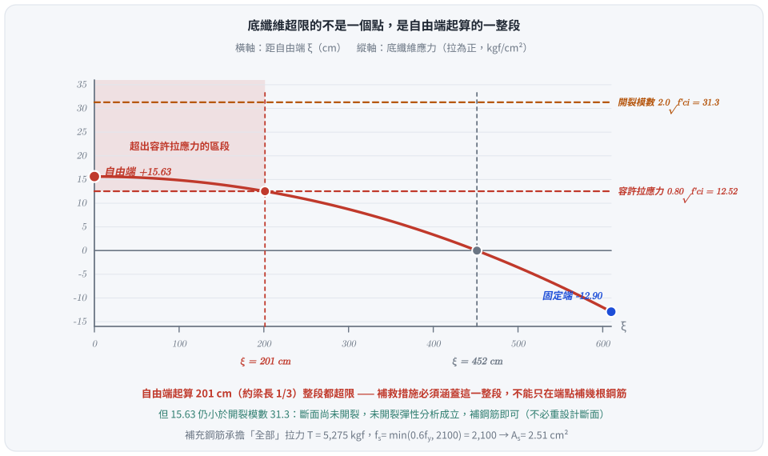

考題編號：RC-2012-1
主分類： RC-U4-1 預力梁斷面應力分析
副分類： （無）
設計法： WSD 容許應力設計法
標籤： 後拉法 有黏裹腱 懸臂梁 初始階段應力 偏心方向判斷 容許應力檢核 底纖維拉應力超限 補救措施 超限區段長度
1. 原始題目重述 (Problem Restatement)
一懸臂式純預力梁（cantilever prestressed beam），斷面 $b=30\ \text{cm}$，$h=90\ \text{cm}$，
懸臂長 $L=610\ \text{cm}$。設置一排 3 根有黏裹（bonded）12.7 mm 直徑七線絞預力鋼鍵，
鋼鍵中心偏心距 $e=30\ \text{cm}$（全長固定偏心，不變）。
⚠ 工法判定勘誤（2026-08-22）：本題是「後拉法」，不是先拉法。 舊版標籤與內文寫「先拉法」，兩處原卷證據直接推翻：
① 原卷寫「在混凝土達 7 天強度時開始拉預力」——先拉法是先張拉鋼腱、再澆置混凝土，
不可能等混凝土硬化到 7 天強度才張拉；「等混凝土達某強度才張拉」是後拉法的定義性動作。
② 原卷註明「計算斷面性質，請忽略鋼鍵與套管所占有面積」——套管（sheath／duct）是後拉法專有，先拉法沒有套管。此更正不影響任何數值（題目已叫我們忽略孔洞、直接用全斷面 $30\times90$），但影響工法觀念、標籤，
且與 §5 的鋼腱應力上限討論（錨定裝置處 $0.70f_{pu}$ 只適用後拉法）直接相關。
初始階段（混凝土達 7 天強度時拉預力）：
- 有效預應力：$f_{pi} = 0.75\,f_{pu}$
- 所受載重：混凝土本身自重
試判斷鋼鍵偏心方向，並檢核初始階段混凝土應力是否超出規範規定。若有未通過者，說明補救措施。
材料性質：
- $f'_c = 350\ \text{kgf/cm}^2$，$f'_{ci} = 0.7f'_c = 245\ \text{kgf/cm}^2$
- $E_c = 15{,}000\sqrt{f'_c}$，$w_c = 2.3\ \text{tf/m}^3$，$f_r = 2.0\sqrt{f'_c}$（原卷給定之開裂模數式；初始階段應代入 $f'_{ci}$，見 §5④）
- $f_{pu} = 19{,}000\ \text{kgf/cm}^2$，$f_{py} = 0.9\,f_{pu}$，$E_p = 2.04\times10^6\ \text{kgf/cm}^2$
- 1 根 12.7 mm 七線絞預力鋼鍵：$A_{ps,1} = 98.71\ \text{mm}^2 = 0.9871\ \text{cm}^2$
初始階段容許應力：
- 壓應力 $\leq 0.60\,f'_{ci}$
- 拉應力 $\leq 0.80\sqrt{f'_{ci}}$
2. 考題核心精神與出題者意圖 (Core Concepts & Examiner's Intent)
核心精神：
懸臂梁的彎矩方向與簡支梁相反（固定端受最大負彎矩／挑空端零彎矩）。
預力鋼鍵偏心方向必須配合彎矩分佈：鋼鍵應在重心以上，才能產生與重力彎矩相抗衡的壓應力。
初始階段（initial stage）同時存在：
- 高初始預力（$0.75\,f_{pu}$，尚未發生長期損失）→ 混凝土壓應力大
- 低混凝土強度（7天強度 $f'_{ci}=0.7f'_c$）→ 容許值小
出題者意圖：
- 測試懸臂梁偏心方向的判斷能力（≠ 簡支梁）
- 測試初始階段需用 $f'_{ci}$ 而非 $f'_c$
- 測試全梁各斷面（固定端 + 自由端）均需檢核
- 考驗補救措施（彎腱 or 補充鋼筋）的判斷
3. 解題戰略地圖與陷阱分析 (Strategic Roadmap & Trap Analysis)
作戰計畫：
Step 0：判斷偏心方向（懸臂梁 → 鋼鍵在重心以上）
Step 1：計算斷面性質（A, I, S）
Step 2：初始預力 Pi
Step 3：自重力矩（懸臂固定端最大）
Step 4：各斷面應力計算（固定端 + 自由端）
Step 5：與容許值比較 → 判斷通過/未通過
Step 6：補救措施說明
關鍵陷阱：
| # | 陷阱 | 應對策略 |
|---|---|---|
| 1 | 偏心方向搞反：套用簡支梁經驗把鋼鍵放在重心下方 | 懸臂梁固定端頂纖維受拉，需要偏心壓縮頂纖維 → 鋼鍵在重心以上 |
| 2 | 只檢核固定端：自由端無外力矩，但偏心仍造成底纖維拉力 | 自由端（無力矩）是底纖維拉力最大的控制斷面 |
| 3 | 用 f'c 而非 f'ci：初始階段必須用 7 天強度 | $f'_{ci} = 0.7\times350 = 245\ \text{kgf/cm}^2$（容許值小得多） |
| 4 | Aps 單位換算：98.71 mm² ≠ 9.871 cm²，是 0.9871 cm²/根 | 1 cm = 10 mm → 1 cm² = 100 mm² → 98.71/100 = 0.9871 cm² |
3.5 變數層次分析 (Variable Hierarchy Analysis)
複習提示：第一次解題後，在每個卡住的知識點旁標記
⚠；第二次複習時只看有⚠的項目。
最終目標
判斷偏心方向 → 計算固定端與自由端四個應力值 → 對比容許值 → 補救措施
本題關鍵公式（依計算順序）
$$\text{Step 1:}\quad A=bh,\quad I=\frac{bh^3}{12},\quad S_t=S_b=\frac{I}{h/2}$$
$$\text{Step 2:}\quad f_{pi}=0.75f_{pu},\quad P_i = f_{pi}\times 3A_{ps,1}$$
$$\text{Step 3:}\quad w = w_c\times b\times h,\quad M_{sw} = \frac{wL^2}{2}\quad \text{（懸臂固定端）}$$
$$\text{Step 4（固定端）:}\quad f_{top} = -\frac{P_i}{A} - \frac{P_i\cdot e}{S_t} + \frac{\boxed{M_{sw}}}{S_t}, \quad f_{bot} = -\frac{P_i}{A} + \frac{P_i\cdot e}{S_b} - \frac{\boxed{M_{sw}}}{S_b}$$
$$\text{Step 4（自由端）:}\quad f_{top} = -\frac{\boxed{P_i}}{A} - \frac{\boxed{P_i}\cdot e}{S_t}, \quad f_{bot} = -\frac{\boxed{P_i}}{A} + \frac{\boxed{P_i}\cdot e}{S_b}$$
$$\text{容許值:}\quad \text{壓} \leq 0.60f'_{ci},\quad \text{拉} \leq 0.80\sqrt{f'_{ci}}$$
L1：題目直接給定
| 符號 | 數值 | 說明 |
|---|---|---|
| $b$ | 30 cm | 斷面寬 |
| $h$ | 90 cm | 斷面高 |
| $L$ | 610 cm | 懸臂長 |
| $e$ | 30 cm | 偏心距（全長固定） |
| $f'_c$ | 350 kgf/cm² | 混凝土設計強度 |
| $f_{pu}$ | 19,000 kgf/cm² | 鋼鍵抗拉強度 |
| $A_{ps,1}$ | 0.9871 cm² | 單根鋼鍵截面積 |
| $w_c$ | 2.3 tf/m³ | 混凝土單位重 |
L2：需知識點推導
Step 0：偏心方向判斷
| 項目 | 說明 | 卡關? |
|---|---|---|
| 懸臂梁彎矩方向 | 固定端：頂纖維受拉（負彎矩）；自由端：零彎矩 | |
| 預力偏心目的 | 使偏心力矩壓縮頂纖維，抵消重力拉力 | |
| 結論 | 鋼鍵在重心以上 $e=+30\ \text{cm}$（向上偏心） |
Step 1：斷面與材料
| 符號 | 公式 | 卡關? |
|---|---|---|
| $A$ | $30\times90=2{,}700\ \text{cm}^2$ | |
| $I$ | $30\times90^3/12=1{,}822{,}500\ \text{cm}^4$ | |
| $S_t=S_b$ | $1{,}822{,}500/45=40{,}500\ \text{cm}^3$ | |
| $f'_{ci}$ | $0.7\times350=245\ \text{kgf/cm}^2$ | |
| 壓應力容許 | $0.60\times245=147\ \text{kgf/cm}^2$ | |
| 拉應力容許 | $0.80\times\sqrt{245}=0.80\times15.65=12.52\ \text{kgf/cm}^2$ |
Step 2：初始預力
| 符號 | 公式 | 卡關? |
|---|---|---|
| $f_{pi}$ | $0.75\times19{,}000=14{,}250\ \text{kgf/cm}^2$ | |
| $A_{ps}$（3根） | $3\times0.9871=2.9613\ \text{cm}^2$ | |
| $P_i$ | $14{,}250\times2.9613=42{,}199\ \text{kgf}$ |
Step 3：自重力矩
| 符號 | 公式 | 卡關? |
|---|---|---|
| $w$ | $2.3\times0.30\times0.90=0.621\ \text{tf/m}=6.21\ \text{kgf/cm}$ | |
| $M_{sw}$ | $6.21\times610^2/2=1{,}155{,}371\ \text{kgf·cm}$ |
Step 4：各斷面應力
| 斷面 | 纖維 | 計算 | 值（kgf/cm²） | 卡關? |
|---|---|---|---|---|
| 固定端 | 頂 | $-15.63-31.26+28.53$ | −18.36（C） | |
| 固定端 | 底 | $-15.63+31.26-28.53$ | −12.90（C） | |
| 自由端 | 頂 | $-15.63-31.26$ | −46.89（C） | |
| 自由端 | 底 | $-15.63+31.26$ | +15.63（T） |
L3：深層知識（不懂就卡住）
| 知識點 | 說明 | 卡關? |
|---|---|---|
| 懸臂梁偏心方向與簡支梁相反 | 簡支梁跨中鋼鍵在下（抵抗正彎矩）；懸臂梁固定端鋼鍵在上（抵抗負彎矩）；偏心創造的力矩方向需與重力彎矩相反 | |
| 自由端是底纖維拉力控制截面 | 全梁偏心固定 → 自由端無重力矩消除底纖維拉力 → 底纖維拉力在自由端最大 | |
| 初始階段用 f'ci 而非 f'c | 7天強度尚低，容許值小；若用 f'c 會高估容許值 | |
| 初始預力是最大預力 | 長期損失後預力減小，應力改善；故初始階段是最不利（壓應力最大、拉應力也可能最大） |
4. 步驟化詳細計算過程 (Step-by-Step Detailed Calculation)
Step 0：判斷偏心方向
懸臂梁在自重下的彎矩圖：
- 固定端（牆端）：負彎矩最大 → 頂纖維拉力、底纖維壓力
- 自由端：零彎矩
為抵消頂纖維拉力，預力偏心應在重心上方，使偏心壓縮力矩在頂纖維產生壓應力。
$$\boxed{\text{鋼鍵位於斷面重心上方 30 cm（e = 30 cm，向上）}}$$

圖 1 偏心方向由彎矩方向決定，不是由「梁」這個字決定。懸臂全長頂部受拉，偏心壓力必須在頂纖維造成壓應力才抵得掉——這張圖攔的是把簡支梁「鋼鍵在跨中下方」的習慣直接搬過來：方向一反，頂纖維拉應力不減反增一倍。
Step 1：斷面性質
$$A = 30 \times 90 = \boxed{2{,}700\ \text{cm}^2}$$
$$I = \frac{30\times90^3}{12} = \frac{30\times729{,}000}{12} = \boxed{1{,}822{,}500\ \text{cm}^4}$$
$$y_t = y_b = 45\ \text{cm} \qquad S_t = S_b = \frac{1{,}822{,}500}{45} = \boxed{40{,}500\ \text{cm}^3}$$
Step 2：材料強度與容許應力
$$f'_{ci} = 0.7 \times 350 = \boxed{245\ \text{kgf/cm}^2}$$
$$\text{壓應力容許值：} \quad 0.60\,f'_{ci} = 0.60\times245 = \boxed{147\ \text{kgf/cm}^2}$$
$$\text{拉應力容許值：} \quad 0.80\sqrt{f'_{ci}} = 0.80\times\sqrt{245} = 0.80\times15.65 = \boxed{12.52\ \text{kgf/cm}^2}$$
Step 3：初始預力
$$f_{pi} = 0.75\times f_{pu} = 0.75\times19{,}000 = 14{,}250\ \text{kgf/cm}^2$$
$$A_{ps} = 3\times98.71\ \text{mm}^2 = 3\times0.9871\ \text{cm}^2 = 2.9613\ \text{cm}^2$$
$$P_i = f_{pi}\times A_{ps} = 14{,}250\times2.9613 = \boxed{42{,}199\ \text{kgf}}$$
各應力分量：
$$\frac{P_i}{A} = \frac{42{,}199}{2{,}700} = 15.63\ \text{kgf/cm}^2 \quad \text{（均勻壓縮）}$$
$$\frac{P_i\cdot e}{S} = \frac{42{,}199\times30}{40{,}500} = \frac{1{,}265{,}970}{40{,}500} = 31.26\ \text{kgf/cm}^2$$
Step 4：自重彎矩
$$w = w_c\times b\times h = 2.3\ \text{tf/m}^3\times0.30\ \text{m}\times0.90\ \text{m} = 0.621\ \text{tf/m} = 6.21\ \text{kgf/cm}$$
懸臂梁固定端最大彎矩：
$$M_{sw} = \frac{wL^2}{2} = \frac{6.21\times610^2}{2} = \frac{6.21\times372{,}100}{2} = \boxed{1{,}155{,}371\ \text{kgf·cm}}$$
$$\frac{M_{sw}}{S} = \frac{1{,}155{,}371}{40{,}500} = 28.53\ \text{kgf/cm}^2$$
Step 5：應力檢核
符號規定： 壓應力為「−」（C），拉應力為「+」（T）
應力公式（鋼鍵在重心上方 e）：
$$f_{top} = -\frac{P_i}{A} - \frac{P_i e}{S_t} + \frac{M}{S_t}$$
$$f_{bot} = -\frac{P_i}{A} + \frac{P_i e}{S_b} - \frac{M}{S_b}$$
其中 $M > 0$ 代表重力使固定端挑空形成的挑空彎矩量值。
▌固定端（$x = 0$，$M = M_{sw} = 1{,}155{,}371\ \text{kgf·cm}$）
$$f_{top} = -15.63 - 31.26 + 28.53 = \boxed{-18.36\ \text{kgf/cm}^2\ \text{(C)}} \leq 147\ ✓$$
$$f_{bot} = -15.63 + 31.26 - 28.53 = \boxed{-12.90\ \text{kgf/cm}^2\ \text{(C)}} \leq 147\ ✓$$
▌自由端（$x = L$，$M = 0$）
$$f_{top} = -15.63 - 31.26 + 0 = \boxed{-46.89\ \text{kgf/cm}^2\ \text{(C)}} \leq 147\ ✓$$
$$f_{bot} = -15.63 + 31.26 - 0 = \boxed{+15.63\ \text{kgf/cm}^2\ \text{(T)}} > 12.52\ \mathbf{❌}$$
Step 6：結論彙整
| 斷面 | 纖維 | 應力 (kgf/cm²) | 性質 | 容許值 | 結果 |
|---|---|---|---|---|---|
| 固定端 | 頂 | −18.36 | C | 147 | ✅ |
| 固定端 | 底 | −12.90 | C | 147 | ✅ |
| 自由端 | 頂 | −46.89 | C | 147 | ✅ |
| 自由端 | 底 | +15.63 | T | 12.52 | ❌ |
$$\boxed{\text{自由端底纖維拉應力 15.63 kgf/cm}^2 > 12.52\ \text{kgf/cm}^2 \text{（超限 3.11 kgf/cm}^2\text{）}}$$

圖 2 兩個斷面必須分開檢核。固定端有自重彎矩幫忙平衡，四項應力全部安全；自由端 $M = 0$，只剩軸壓與偏心兩項，上偏心在底纖維留下淨拉力 $+15.63$——這張圖攔的是「只算彎矩最大的斷面」：本題出事的恰恰是彎矩為零的那一端。
Step 6b：超限的不是一個點，是一整段（2026-08-22 補算）
底纖維應力沿梁長是連續變化的。令 $\xi$ 為距自由端的距離，則 $M(\xi) = w\xi^2/2$：
$$f_{bot}(\xi) = -\frac{P_i}{A} + \frac{P_ie}{S} - \frac{w\xi^2/2}{S} = 15.63 - 28.53\left(\frac{\xi}{610}\right)^2\ \text{（拉為正）}$$
令 $f_{bot}(\xi) = 12.52$：
$$\left(\frac{\xi}{610}\right)^2 = \frac{15.63-12.52}{28.53} = 0.1090 \;\Rightarrow\; \xi = 610\times0.3302 = \boxed{201\ \text{cm}}$$
即自由端起算 201 cm（約梁長 1/3）的整段底纖維都超出容許拉應力，
補救措施必須涵蓋這一整段，不能只在自由端點補幾根鋼筋。
（同理可算「$f_{bot} = 0$ 的位置」：$\xi = 610\sqrt{15.63/28.53} = 452$ cm，
自由端起 452 cm 以內底纖維皆為拉應力。）

圖 3 超限的是一整段，不是一個點。$f_{bot}(\xi)$ 是拋物線，$\xi = 201$ cm 以內都超過 $12.52$——這張圖攔的是「在自由端補幾根鋼筋就算數」：補強鋼筋必須涵蓋這 201 cm 再加伸展長度 $\ell_d$。
Step 7：補救措施
原因： 自由端無外力矩，上偏心鋼鍵在底纖維產生淨拉力，超過容許拉應力。
▌補救方案一（推薦）：採用彎折（harped）或拋物線腱型
將鋼鍵改為變偏心設計：固定端 $e=30\ \text{cm}$（向上），自由端 $e=0$（過重心）。
自由端底纖維應力：
$$f_{bot,\text{free}} = -\frac{P_i}{A} + \frac{P_i\times0}{S_b} = -15.63\ \text{kgf/cm}^2 \quad \text{（全壓）✓}$$
此法從根本消除自由端底纖維拉力，且不增加材料用量。
▌補救方案二：配置非預力補充鋼筋
在底纖維拉力區（自由端附近）加設非預力縱向鋼筋，以承擔超過容許值的拉力。
拉力區中性軸（從底量起）：
$$y_{NA} = h\times\frac{f_{bot}}{f_{bot}+|f_{top}|} = 90\times\frac{15.63}{15.63+46.89} = 90\times0.25 = 22.5\ \text{cm}$$
底部拉力合力：
$$T = \frac{1}{2}\times f_{bot}\times y_{NA}\times b = \frac{1}{2}\times15.63\times22.5\times30 = 5{,}275\ \text{kgf}$$
所需補充鋼筋。鋼筋應力的取法要引對條文：土木 401-110 §24.5.3.2 解說／ACI 318-19 R24.5.3.2 規定
「以未開裂斷面算出的全部拉力由握裹鋼筋承擔，其應力取 $0.6f_y$，但不得大於 2,100 kgf/cm²（210 MPa）」：
$$f_s = \min(0.6f_y,\ 2{,}100) = \min(0.6\times4{,}200,\ 2{,}100) = \min(2{,}520,\ 2{,}100) = 2{,}100\ \text{kgf/cm}^2$$
$$A_s = \frac{T}{f_s} = \frac{5{,}275}{2{,}100} = \boxed{2.51\ \text{cm}^2}$$
配置 2 根 D13（$2\times1.27=2.54\ \text{cm}^2$）放置於梁底，由自由端延伸至少 201 cm（超限區段，見 Step 6b）
再加上伸展長度 $\ell_d$，即可滿足需求。
兩點註記： ① $f_y$ 原卷未給定，此處假設 $f_y = 4{,}200$ kgf/cm²（作答時須寫明）。
舊版寫「取 $f_s = 0.5f_y = 2100$」數值恰好相同，但依據是錯的——規範寫的是 $0.6f_y$ 加 2,100 的絕對上限，
若題目給 $f_y = 2{,}800$，正解是 $0.6\times2800 = 1{,}680$（不是 $0.5\times2800=1{,}400$），答案就會不同。
② 承擔的是全部拉力 $T$，不是只承擔超出容許值的那 3.11 kgf/cm² 部分——這是規範的明文要求。
5. 關鍵爭議點與進階探討 (Critical Issues & Advanced Discussion)
① 初始階段 vs 服務階段
初始階段預力最大（$P_i = 0.75\,f_{pu}$），混凝土強度最低（$f'_{ci}$），是設計的不利狀態。
長期服務階段：預力損失後 $P_e < P_i$，且 $f'_c > f'_{ci}$，應力往往更為有利。
→ 兩個階段均需獨立檢核。
② 自由端「無矩」的陷阱
對於簡支梁，端部（支點）也是無矩點，但支點有支反力平衡；懸臂梁自由端無任何力的平衡，純粹由預力作用。偏心上移後，底纖維完全靠預力偏心拉伸，無重力矩的「遮蔽」，此節點成為底纖維控制斷面。
③ 考場快速估算：超限量
$$\Delta f = f_{bot,\text{free}} - f_{allow,T} = 15.63 - 12.52 = 3.11\ \text{kgf/cm}^2\ (\text{超出 } 24.8\%)$$
若用方案二補鋼筋，需針對全部底部拉力（不只超限部分）設計補充鋼筋，這是規範的明文要求。
④ 原卷給了 $f_r = 2.0\sqrt{f'_c}$ 卻沒人用——它其實是判「會不會裂」的鑰匙（2026-08-22 補）
舊版全文沒有用到題目給的開裂模數，這是個未用的已知條件（通常代表漏了一個小題意）。
初始階段應以 7 天強度代入：
$$f_r = 2.0\sqrt{f'_{ci}} = 2.0\sqrt{245} = 31.3\ \text{kgf/cm}^2 \qquad(\text{若代 } f'_c：2.0\sqrt{350} = 37.4)$$
$$f_{bot,\text{free}} = 15.63 < f_r = 31.3\ \Rightarrow\ \textbf{斷面尚未開裂}$$
這個判斷決定了補救措施的性質：
| 若 $f_{bot} < f_r$（本題） | 若 $f_{bot} > f_r$ |
|---|---|
| 斷面完好，只是超出容許值（規範為耐久性設下的較嚴門檻） | 已產生實際裂縫 |
| 補救＝配握裹鋼筋承擔拉力（方案二）或改腱型（方案一），不必重新設計斷面 | 必須降預力／改腱型／加深斷面，補鋼筋救不回來 |
| 未開裂全斷面彈性分析（本題整套算法）成立 | 未開裂分析失效，須用開裂斷面 |
作答時務必寫出這一段——它證明你知道「容許應力」與「開裂強度」是兩個不同的門檻。
⑤ 初始鋼腱應力 $f_{pi} = 0.75f_{pu}$ 合不合規範？——新舊制答案不同（2026-08-22 補）
$f_{pi} = 0.75\times19{,}000 = 14{,}250$ kgf/cm²，$f_{py} = 0.9f_{pu} = 17{,}100$ kgf/cm²。
| 規範版本 | 條文 | 限制值 | 判定 |
|---|---|---|---|
| ACI 318-11／土木 401-100（原卷 101 年當時） | §18.5.1(b) 傳遞後立即 | $\min(0.82f_{py},\ 0.74f_{pu}) = \min(14{,}022,\ 14{,}060) = 14{,}022$ | ❌ 超 1.6% |
| ACI 318-14/19／土木 401-110/112（現行） | Table 20.3.2.5.1(a) 張拉時 | $\min(0.80f_{pu},\ 0.94f_{py}) = \min(15{,}200,\ 16{,}074) = 15{,}200$ | ✅ 通過 |
| 同上 | Table 20.3.2.5.1(b) 後拉法錨定裝置與續接器處傳遞後立即 | $0.70f_{pu} = 13{,}300$ | ❌ 錨定區超 7.1% |
現行規範已刪除「傳遞後 $0.82f_{py}$／$0.74f_{pu}$」這條通則，改為只管兩件事：張拉時的上限，
以及後拉法錨定裝置處的傳遞後上限。因此依最新規範：
- 本題檢核的梁身斷面（固定端、自由端）：$f_{pi} = 14{,}250$ 完全合法，四個應力值與結論不變 ✓
- 但錨定區（後拉法特有）另須滿足 $0.70f_{pu} = 13{,}300$，本題數值超出，
實務上須改用較低的初拉應力、或改採高強度錨定系統／局部加強。
這正是把工法從「先拉」更正為「後拉」之後才浮現的檢核項——先拉法根本沒有錨定裝置這一條。
6. 依最新規範對照（土木 401-112／ACI 318-19）
結論：四個應力值、超限判定與兩個補救方案全部不變；新增兩項檢核、修正一項依據。
| 項目 | 原卷（101 年，土木 401-100 世代） | 土木 401-112／ACI 318-19 | 影響 |
|---|---|---|---|
| 傳遞後容許壓應力 | $0.60f'_{ci} = 147$（原卷給定） | $0.60f'_{ci}$；簡支構材端部放寬為 $0.70f'_{ci}$（§24.5.3.1） | 懸臂梁不適用端部放寬，仍取 147 ✓ 不變 |
| 傳遞後容許拉應力 | $0.80\sqrt{f'_{ci}} = 12.52$（原卷給定） | $0.80\sqrt{f'_{ci}}$（kgf 制）＝$0.25\sqrt{f'_{ci}}$（MPa 制）；簡支構材端部 $1.60\sqrt{f'_{ci}}$ | 不變，自由端仍 ❌ 超限 |
| 彈性應力疊加 | $f = P/A \pm Pe/S \mp M/S$ | 未改 | 不變 |
| 超出容許拉應力之處置 | 配補充鋼筋 | §24.5.3.2：須配握裹鋼筋承擔未開裂斷面算出的全部拉力，$f_s = 0.6f_y \le 2{,}100$ kgf/cm² | 依據修正（舊寫 $0.5f_y$），本題 $A_s = 2.51$ cm² 不變 |
| 鋼腱張拉時應力上限 | $\min(0.80f_{pu},\,0.94f_{py})$ | 同（Table 20.3.2.5.1(a)）＝15,200 → 14,250 ✓ | 不變 |
| 鋼腱傳遞後應力上限 | $\min(0.82f_{py},\,0.74f_{pu}) = 14{,}022$ → ❌ | 通則已刪除；改為後拉法錨定裝置處 $0.70f_{pu} = 13{,}300$ → 錨定區 ❌ | 判定改變：梁身合法，錨定區仍需處理 |
| 開裂模數 | $f_r = 2.0\sqrt{f'_c}$（原卷給定） | $0.62\lambda\sqrt{f'_c}$ MPa ＝ $2.0\sqrt{f'_c}$ kgf/cm²（§19.2.3.1） | 不變，新增未開裂判定 |
| 使用階段分級 | 舊制無分級 | Class U／T／C（§24.5.2.1）——本題只問初始階段，未觸發 | 延伸題型 |
一句話： 最新規範沒動初始階段的容許應力，動的是鋼腱應力上限的管制方式
（從「管整支腱」改為「管張拉端與錨定裝置」）以及補充鋼筋的應力取值依據。
兩者都因為本題實為後拉法而變得相關。
圖解補繪：2026-08-31（向量圖 3 張，腳本 figs/gen_RC-2012-1.py，可重跑；腳本檔尾對 §4／§5 公佈值做 assert）